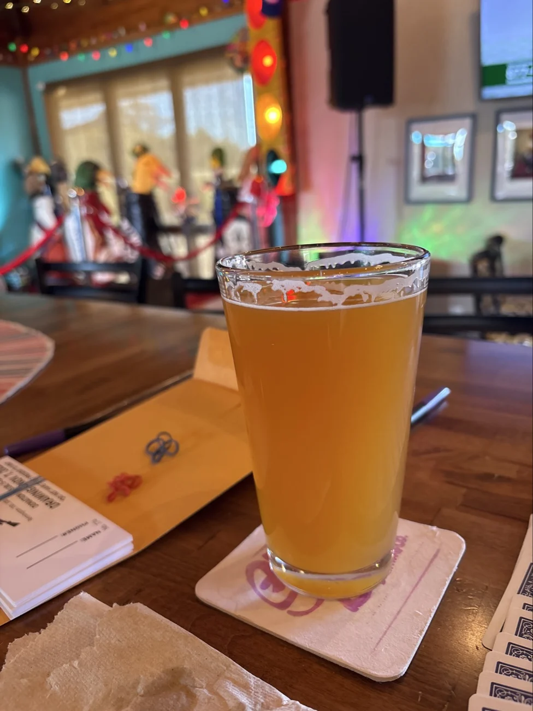

Fruited gose01
Key to Happiness
A key lime pie-inspired gose with a bright, playful personality.
4.7% ABV5 IBU
CRAFTED IN COMMERCE. POURED WITH PERSONALITY.
Follow your curiosity. Find your favorite.
Then try something completely different.

SMALL BATCHMEET THE COLLECTION
Explore a selection of beers we’ve brewed. Our tap lineup rotates, so these are past and recurring favorites, not a live menu.
Explore more on Untappd ↗12 beers to explore
A key lime pie-inspired gose with a bright, playful personality.
A pickle beer. Yes, really. For the curious drinker in the group.
A strawberry sour with a name that’s as playful as the pour.
One of the fruit-forward entries in our anything-but-ordinary collection.
A meeting of Belgian wit character and American IPA style.
A bigger-strength IPA for the hop lovers in the flock.
A milkshake-style IPA from the more adventurous side of the brewery.
An easygoing lager and a familiar name in the Strange Duck collection.
Malt-led, with caramel character and a blend of pale and darker malts.
A dessert-inspired stout with a campfire-classic twist.
A lower-strength English-style stout for the dark-beer crowd.
A cream ale with a sunny name and an easygoing place in the lineup.
Try another name, flavor, or style.
Beer details reflect published brewery listings. Recipes, ABV, and availability may change; the taproom menu is the final word. Ask the team about ingredients and allergens.
THE BEST MENU IS THE ONE AT THE BAR
With a rotating mix of house-brewed styles, there’s more to discover in person. Ask the team what’s pouring today and which beer fits your mood.
Looking for something beyond beer? Ask about the current hard seltzer and non-beer options before your visit.
Call the taproom